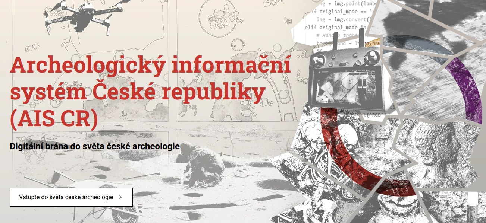
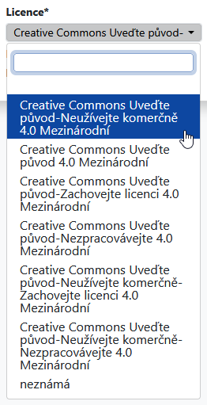

| Akronym | Licence | Poznámka |
|---|---|---|
| CC BY 4.0 Int. | Creative Commons Uveďte původ 4.0 Mezinárodní | Doporučená licence |
| CC BY-NC 4.0 Int. | Creative Commons Uveďte původ-Neužívejte komerčně 4.0 Mezinárodní | Doposud automaticky přednastavená licence |
| CC BY-ND 4.0 Int. | Creative Commons Uveďte původ-Nezpracovávejte 4.0 Mezinárodní | |
| CC BY-SA 4.0 Int. | Creative Commons Uveďte původ-Zachovejte licenci 4.0 Mezinárodní | |
| CC BY-NC-ND 4.0 Int. | Creative Commons Uveďte původ-Neužívejte komerčně-Nezpracovávejte 4.0 Mezinárodní | |
| CC BY-NC-SA 4.0 Int. | Creative Commons Uveďte původ-Neužívejte komerčně-Zachovejte licenci 4.0 Mezinárodní |
Zpravodaj AMČR č. 14
Nové weby a vizuální styl, metodické pokyny, kontroly záznamů a licence u dokumentů
Vážení uživatelé a uživatelky AMČR,
přinášíme Vám zpravodaj AMČR č. 14, který představuje nové webové stránky a vizuální styl naší infrastruktury. Dále dáváme do pozornosti sekci Metodické pokyny a výklady Dokumentace AMČR a stručně popisujeme kontroly, kterými prochází dokumenty (aj.) po odeslání do AMČR. Dokumentů se týká i to, že nově lze volit licenci, pod kterou budou zveřejněny v Digitálním archivu.
Váš tým AIS CR…
Nové weby AIS CR a AMČR

V prosinci 2025 byla spuštěna nová podoba webových stránek Archeologického informačního systému České republiky a Archeologické mapy České republiky. Weby přinášejí modernější vzhled, přehlednější strukturu i příjemnější uživatelské prostředí. Oba weby spojuje jednotný vizuální styl, který vás bude i nadále provázet napříč komunikací infrastruktury AIS CR. Nové weby dále pomáhají propojovat služby AIS CR s jejich uživatelstvem a zpřístupňovat je tak, aby si v nich každá skupina našla to, co potřebuje. Cílem je nejen usnadnit práci s informacemi, ale také přispívat k ochraně a popularizaci archeologického dědictví. Bez jeho digitální dostupnosti a viditelnosti by totiž jen obtížně naplňovalo svůj potenciál a jeho výzkum a ochrana nacházely širší podporu.
Web AIS CR dostupný na https://www.aiscr.cz/ nově obsahuje také blog. Podtitul Archeodata po lopatě – příspěvky o archeologii, datech a světě AIS CR jsme nezvolili náhodně. Má naznačit, že chceme fungování AIS CR přibližovat srozumitelně a přístupně – od novinek a zkušeností až po pohled do zákulisí naší práce. Sledujte blog a dejte nám vědět, jak se nám to daří!
Web AMČR na adrese https://amcr-info.aiscr.cz/ nabízí přehledný přístup k nástrojům Archeologické mapy, a to jak možností rychlého výběru podle vašeho záměru (např. Oznamujte stavby, Evidujte výzkumy apod.), tak i v podobě strukturovaného seznamu. Nechybí ani Aktuality a často kladené otázky. V Aktualitách najdete především upozornění na výpadky a plánované odstávky AMČR, případně další informace technického rázu či pozvánky na blížící se školení k AMČR-PAS, stejně jako doposud. V budoucnu plánujeme sjednotit aktuality napříč našimi službami, tj. na stránkách AMČR a v Digitálním archivu.
Součástí webu je také uživatelsky přehlednější podoba podstránky AMČR-PAS (Portál amatérských spolupracovníků a evidence samostatných nálezů). Ta se věnuje principům spolupráce profesionální a amatérské komunity v rámci občanské vědy a fungování Portálu. Najdete tam často kladené otázky od veřejnosti i archeologické obce, relevantní odkazy na užitečné dokumenty, pomůcky a nástroje (např. manuál pro focení, měřítka aj.) i vzorové dokumenty ke stažení. Oba weby jsou dostupné také v anglické verzi.
Budeme rádi, když nové weby vyzkoušíte a věříme, že zde naleznete užitečný obsah a budete se k nim rádi vracet!
Když najdete něco, co by Vám na webech chybělo, nebo narazíte na chybu, dejte nám prosím vědět na amcr@arup.cas.cz a/nebo amcr@arub.cz.
Sekce Metodické pokyny a výklady v dokumentaci AMČR
V sekci Metodické pokyny a výklady naleznete dokumenty nastavující základní metodické přístupy aplikované v AMČR a agendách souvisejících s jejím užíváním, vč. doporučení k výkladu existujících předpisů a regulací.
Metodické doporučení pro administraci projektů v AMČR je detailněji popsáno níže, dále sekce obsahuje Pravidla pro podání nálezové zprávy o terénním archeologickém výzkumu a Pravidla pro badatelské archeologické výzkumy. K AMČR-PAS se vztahují Metodický výklad AMČR-PAS v kontextu zákona č. 20/1987 Sb., o státní památkové péči a Stanovisko MK ČR k AMČR-PAS . V neposlední řadě jsou zde také Informace k Dohodám o využívání AMČR a vzory jejich dodatků.
Administrace projektů v AMČR a její návaznost na zákonné povinnosti
AMČR jako základní oborový nástroj archeologické památkové péče plní dva hlavní účely – uchovat informace o archeologickém dědictví České republiky a umožnit subjektům archeologické památkové péče plnit zákonné povinnosti jednoduchým, transparentním a efektivním způsobem. Plnění těchto povinností, vyplývajících primárně ze zákona č. 20/1987 Sb., o státní památkové péči, ve znění pozdějších předpisů a příslušných Dohod o rozsahu a podmínkách provádění archeologických výzkumů, je integrálním předpokladem ochrany archeologického dědictví České republiky.
V návaznosti na novelu zákona o státní památkové péči platnou od 1. 1. 2025, proto Archeologické ústavy připravily nové metodické doporučení pro administraci projektů v AMČR. Doporučení usazuje administraci projektů do kontextu zákona a vysvětluje, jak se jednotlivé úkony pojí se zákonnými povinnostmi.
Doporučení mimo jiné
- adresuje oznamování stavební činnosti stavebníky a zápis záměrů oprávněnými organizacemi;
- objasňuje proč je přihlašování projektů důležité a proč z něj oprávněné organizaci neplynou žádné povinnosti směrem k stavebníkovi;
- zdůrazňuje potřebu evidence zahájení a ukončení výzkumu v terénu;
- popisuje proces archivace projektu a rušení projektu.
Metodické doporučení nezavádí žádné nové povinnosti, ale administrace projektů v souladu s ním zaručuje dodržení všech zákonných povinností. Včasná administrace projektů v AMČR navíc zlepšuje komunikaci se stavebníky a zvyšuje transparentnost archeologické památkové péče.
Viz Metodické doporučení pro administraci projektů v AMČR pro podrobnější informace.
Postup kontroly záznamů při archivaci a způsoby jejich vracení
Pro lepší pochopení co se s dokumenty a ostatními daty děje po odeslání v AMČR Vám přinášíme stručný popis následných kontrol, které provádějí naši archiváři a archivářky.
Po uzavření projektu dochází nejprve ke kontrole formální shody informací uvedených na kartě projektu a informací uvedených v popisu připojené archeologické akce. Jelikož popis projektu obsahuje zejména administrativní data od oznamovatelů, nemusí se pochopitelně zcela shodovat s informacemi v archeologické akci, která obsahuje popis toho, jak akce probíhala skutečně v terénu. Mělo by být nicméně zřejmé, že obě části záznamu patří k sobě a v případě výrazných rozdílů by měly být tyto rozdíly v AMČR okomentovány. V momentu archivace jsou pak automaticky anonymizovány údaje o oznamovateli projektu a jsou smazány soubory ze sekce Projektová dokumentace (u projektů typu badatelský a průzkum je projektová dokumentace ponechána).
V rámci archeologické akce je před archivací kontrolován zejména její faktický obsah, úplnost a vzájemná kompatibilita jednotlivých částí. Tedy zda je akce odpovídajícím způsobem popsána, zda má správně zvolené dokumentační jednotky a zda k nim přidělené PIANy odpovídají popsanému rozsahu a charakteru akce. V případě pozitivních akcí prochází kontrolou také komponenty připojené k dokumentačním jednotkám a to, zda odpovídají informacím uvedeným v připojené nálezové zprávě či jiném relevantním dokumentu. V případě nedostatků je akce vrácena autorovi k opravě či doplnění.
Kontrolou prochází také dokumenty připojené k akci. Pokud se jedná o nálezovou zprávu, vychází archiváři a archivářky při kontrole z Pravidel pro podání nálezové zprávy. U jiných typů dokumentů (např. expertních posudků) vychází z obvyklé podoby těchto dokumentů, kdy je při kontrole důraz kladen především na úplnost a přehlednost obsažených informací. V případě zjištěných nedostatků je dokument spolu s akcí vrácen k opravě či doplnění (v případě rozsáhlejších nedostatků obdržíte e-mail s podrobnějšími informacemi). Pokud je dokument v pořádku, projde tzv. optimalizací zajišťující jeho správné otevření i po dlouhé době a je archivován.
Následně je archivována také akce a po archivaci poslední akce i celý projekt. Po archivaci se všechny záznamy promítnou do Digitálního archivu, kde jsou s odpovídající přístupností zveřejněny.
U samostatných akcí při kontrole pochopitelně odpadá část s informacemi obsaženými v projektu, ale kontrola samostatné akce probíhá podle stejných principů jako kontrola projektové akce. Stejně tak je jejich specificitě přizpůsobena kontrola záznamů v AMČR-PAS, kde je specifická kontrola přikládaných fotografií a nálezová zpráva má pro tyto účely upravenou podobu. Principy kompletnosti a přehlednosti údajů jsou však zachovány i zde.
Možnost volby licence u dokumentů
V AMČR je nově možné volit licenci, pod kterou budou dokumenty zveřejněny v Digitálním archivu. Doposud byla licence přednastavena dle licenční smlouvy mezi Archeologickými ústavy AV ČR a oprávněnou organizací, která dokument nahrála. Tuto licenci může nyní uživatel či uživatelka změnit na jinou Creative Commons licenci, viz tabulka níže.
Dokumenty z archivů Archeologických ústavů AV ČR jsou zpravidla zveřejněny pod licencí CC BY-NC 4.0 Int.. Dokumenty, u kterých je autorství nejisté nebo jinak problematické pak mají v políčku licence položku neznámá. Do budoucna doporučujeme volit licenci CC BY 4.0 Int., která je permisivní a umožňuje široké využití nahraných dat a dokumentů, přičemž zachovává povinnost uvést autora a zdroj díla. Tato licence jako jediná plně odpovídá požadavkům zákona č. 328/2025 Sb., o výzkumu, vývoji, inovacích a transferu znalostí na otevřená data.

Nově je možné volit mezi následujícími Creative Commons licencemi:
Prvky Creative Commons licencí jsou následující:
BY– Attribution / Uveďte původ – vždy je třeba uvést autora, název, zdroj díla a licenci;NC– Non Commercial / Neužívejte dílo komerčně – dílo nesmí být použito pro komerční účely, tedy pro účel generování zisku;ND– No Derivatives / Nezpracovávejte – dílo nesmí být upravováno, tedy ani nesmí být vytvářena odvozená díla;SA– Share Alike / Zachovejte licenci – pokud dílo upravíte, musíte své dílo licencovat stejnou licencí.
O otevřených licencích, licencování dat apod. se můžete více dozvědět na webu k Open Science spravovaném Národní technickou knihovnou, viz https://openscience.cz/cs/open-science/komponenty/open-licencing/ nebo na webu Open Science provozovaném Knihovnou Akademie věd ČR, viz https://openscience.lib.cas.cz/open_access/verejne-licence/.